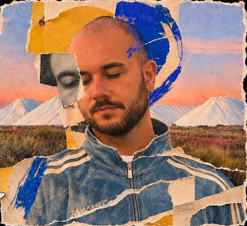

Ding Dong Piro
la historia →
Un lugar que se repite, una voz que vuelve, un ruido en la distancia. Ding dong piro es eso: el eco de algo que no termina de irse.

Un lugar que se repite, una voz que vuelve, un ruido en la distancia. Ding dong piro es eso: el eco de algo que no termina de irse.


Herbario nocturno

[Biografía corta de Kailkob: de dónde viene, qué hace, qué busca con sus canciones.]